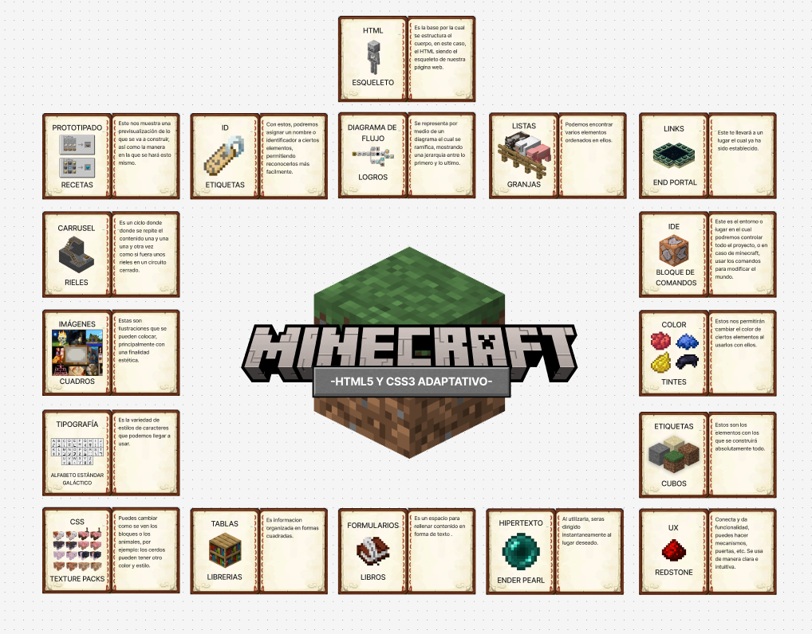
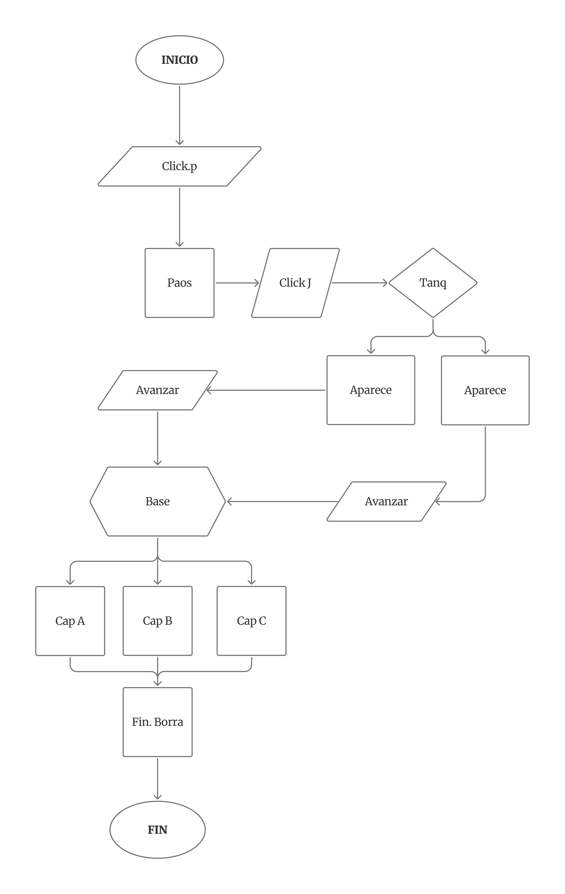

HTML
HTML
Html 5 Lo primero que tenemos que saber que es la ultima version de tecnologia html ,cuyas siglas corresponden a “HyperText MarKup Language” Que Cada parte tiene un significado :HyperText:Cuyo Signicado de hipertexto ,que es mas que un texto que enlaza con otros contenidos ,que pueden ser otro texto u otro archivo .
Esto significa es la base del funcionamineto de la web tal y como la conocemos.

HYPERTEXTO
En HTML el hipertexto se refiere ala forma en que enlazan las paginas web entre si ,creando una red interconectado de informacion.
LINKS
En HTML, un link, también conocido como hipervínculo, es una referencia que conecta diferentes páginas web o recursos dentro de la misma página o en diferentes sitios web.
DIAGRAMAS DE FLUJO-HTML
Diagrama de Flujo en HTML: Es un diagrama de flujo que se integra en una página web, utilizando elementos HTML como texto, imágenes, o incluso código para construir la representación visual.
NOTA:Esto nos sive para acomodar tu pagina en orden Especifico.

ETIQUETAS
En HTML ,Un etiqueta es un fragmento de codigo que define la estructura y el contenido de una pagina web,actuan como marcadores que indican el navagador como mostrar cada elemento de la pagina ,desde los encabezados y parrafos hasta imagenes y enlaces.
ID
En HTML,Existen atributos y uno de ellos es el id que se utiliza para asignar un indentificador unico a un elemento de HTML.
NOTA:Este indentidicador permite que ese elemento sea referenciado y manipulado especificamente por css y js
PROTOTIPADO -WIREFRAMES
Es un esquema visual que representa la estructura basica de una interfaz,como una pagina web o una aplicacion,Es como un esqueleto o plano estructural que nos muestra la distribucion de los elementos(botones,textos,imagnes,titulos etc.)y como van a interactuar.

IMAGENES
En HTML,las imagenes son elementos visuales que se utilizan para mostrar contenido grafico en una pagina web,para insertar imagenes se utiliza la etiqueta "img" que esta es una etiqueta vacia y no requiere de una etiqueta de cierre
TABLAS
EN HTML ,las tablas son estructuras utilizadas para organizar y presentar datos de forma tabular,la manera en la se presenta en fila y columnas.
se utilizan para mostrar informacion que tiene una ralacion clara entre los diferentes elementos.
LISTAS
En HTML, las listas son elementos que permiten organizar y presentar información de manera estructurada, utilizando viñetas o números para indicar la secuencia de elementos. Hay tres tipos principales de listas en HTML: desordenadas ul, ordenadas ol y de definición dl/dl .
FORMULARIOS
Un formulario En HTML es un area de una pagina web definida por la etiqueta form que contiene elementos interactivos como campos de texto,botones,menus,desplegables y otros controles.
VIEWPORT "PALABRAS PROPIAS"
etiquete que te ayuda a ajustar el contenido de nuestra pagina mediante una etiqueta meta esta etiqueta nos ayuda ajustarlo tanto a moviles o pantallas grandes
¿QUE ES VIEWPORT?
En HTML, el viewport es el área de la ventana del navegador donde se visualiza el contenido de una página web, es decir, la parte visible de la página en un dispositivo. La etiqueta "meta" name="viewport"> se utiliza en el "head" del HTML para controlar cómo se ajusta y escala el contenido en pantallas de distintos tamaños, lo cual es crucial para el diseño responsivo, ya que le indica al navegador cómo adaptar la página a la ventana gráfica del dispositivo.
CSS
CSS
CSS (Hojas de Estilo en Cascada) es un lenguaje utilizado para definir la presentación y el estilo de un documento HTML. En esencia, CSS se encarga de la apariencia visual de una página web, mientras que HTML define la estructura del contenido. CSS permite controlar aspectos como colores, fuentes, márgenes y la disposición de los elementos, separando la presentación del contenido y facilitando el diseño y mantenimiento de sitios web.
TIPOGRAFIA
En HTML, la tipografía se refiere a la apariencia del texto en una página web. Se controla mediante etiquetas HTML y, más comúnmente, mediante CSS, que permiten definir la familia de fuentes, el tamaño, el estilo (negrita, cursiva), el color y otros aspectos visuales del texto.
CARRUSEL
En HTML, un carrusel es un componente visual que permite mostrar una secuencia de elementos (como imágenes, texto o videos) de forma rotativa, generalmente en la cabecera de una página web o en una sección destacada. Funciona como un deslizador que muestra un elemento a la vez y permite al usuario navegar entre ellos, ya sea mediante botones de navegación o desplazamiento táctil.
COLOR
En HTML, un color se define usando un código hexadecimal, un nombre de color en inglés, o valores RGB (Red, Green, Blue). Estos códigos permiten especificar el color exacto que se mostrará en un elemento de la página web.
ADAPTATIVO
En HTML, el diseño adaptativo (adaptive design) se refiere a la técnica de adaptar la apariencia y funcionalidad de un sitio web a diferentes dispositivos y tamaños de pantalla, mostrando diferentes versiones del HTML (y CSS) según el dispositivo del usuario. En lugar de usar un diseño único que se adapta dinámicamente (diseño responsivo), el diseño adaptativo carga diferentes versiones predefinidas del sitio, optimizadas para cada tipo de dispositivo.
UX
En HTML, un color se define usando un código hexadecimal, un nombre de color en inglés, o valores RGB (Red, Green, Blue). Estos códigos permiten especificar el color exacto que se mostrará en un elemento de la página web.
UNIDADES ABSOLUTAS
son las unidades de medida en CSS que realizan alusión a las unidades que no cambian, aquellas que en todos los entornos son equivalentes
- in: hace referencia a las pulgadas, que son iguales a 2.54cm
- cm: se refiere a los centímetros.
- mm: hace referencia a los milímetros.
- q: se refiere a un cuarto de la unidad mm. 1q=0.248mm.
- pt: un punto es igual a 1/72 de una pulgada o 0.35mm.
- pc: una pica es igual a 12 puntos, o sea 4.23mm.
- px: esta etiqueta se refiere a los píxeles que, aunque son absolutos (0.26mm), también son relativos a la densidad de la pantalla.
UNIDADES RELATIVAS
las unidades relativas. Estas son un poco más flexibles, es decir, se ajusta de consenso al tamaño de otro costo de alusión.
- em: tamaño de fuente establecida en navegador.
- ex: mitad del tamaño de fuente del navegador.
- ch: la anchura del carácter "0" (cero).
- %: porcentaje.
- rem: tamaño de fuente personalizado.
ANIMATION
En CSS, una animación de color es una secuencia de fotogramas que hace que los colores de un elemento cambien gradualmente a lo largo del tiempo, en lugar de un cambio instantáneo. Se define con la regla @keyframes para especificar los estilos en diferentes puntos (fotogramas clave) y se aplica al elemento con la propiedad animation, permitiendo efectos visuales como transiciones de color de fondo o texto.
DELAY
"delay" (retraso) se refiere a las propiedades animation-delay y transition-delay, que especifican el tiempo que debe transcurrir antes de que una animación o una transición comience, respectivamente. Estas propiedades permiten controlar el inicio de efectos visuales, ya sea en animaciones complejas con animation-delay o en transiciones suaves de propiedades de un elemento con transition-delay, mejorando la experiencia del usuario al crear efectos más controlados y fluidos.
TRANSITION
Transiciones CSS La propiedad transition-timing-function se utiliza para especificar cómo cambia el ritmo de la transición a lo largo de su duración.
ANIMATION-DURATION
Animation-duration Indica la cantidad de tiempo que la animación consume en completar su ciclo (duración).
ANIMATION-FILL-MODE
animation-fill-mode Especifica qué valores tendrán las propiedades después de finalizar la animación (los de antes de ejecutarla, los del último fotograma de la animación o ambos).
DOM
DOM
El DOM (Modelo de Objetos del Documento) es una representación en memoria de una página web que permite a los lenguajes de programación, como JavaScript, acceder y manipular la estructura, estilo y contenido de un documento HTML o XML. En esencia, el DOM transforma el HTML en un árbol de nodos que puede ser recorrido y modificado dinámicamente.
DOM-ANIMACIONES
En HTML, las animaciones DOM (Document Object Model) se refieren a la manipulación dinámica de los elementos de una página web utilizando JavaScript para crear efectos visuales como movimientos, cambios de tamaño, rotaciones, etc. El DOM es una representación en memoria de la estructura HTML de la página, y JavaScript permite acceder y modificar esta estructura para lograr estas animaciones.
DOM-CSS
En HTML, el DOM (Modelo de Objetos del Documento) es una representación en memoria de una página web que permite a los programas como JavaScript interactuar con los elementos de la página. Es como un árbol donde cada elemento HTML es un nodo, y el DOM facilita la manipulación de la estructura, estilo y contenido de la página.
IA
¿DONDE IMPLEMENTAR?
primero tenemos que saber que tipo de ia queremos implementar por que se puede implemenatar chatbot,recomendaciones personalizadas,analisis de comportamiento ,reconocimiento de imagenes y audios,prediccion de datos.
- Comunicacion con chatbot :JS y APIS
- RECOMENDACIONES :BACKEND Y FRONEND
- ANALISIS DE DATOS : SCRIPTS QUE RECOLECTAN INFO
- VISION : SUBIDA DE IMAGENES Y PROCESAMIENTO BACKEND
- PROCESAMIENTO DE LENGUEJE : APIS O MODELOS ALOJADOS EN SERVIDORES
VISION
La IA de visión en las páginas web sirve para que uno pueda subir fotos y que el sistema las analice. O sea, tú subes la imagen en la parte que ves (frontend) y en el servidor (backend) la máquina revisa qué hay en la foto: caras, texto, objetos, etc. Eso se usa para cosas como comprobar tu identidad, buscar productos solo con una foto o quitar imágenes que no deberían estar.
RECOMENDACIONES
Las recomendaciones son la típica parte donde la página te sugiere cosas que podrían gustarte. Por detrás (backend) la IA ve lo que sueles ver o comprar y arma sugerencias, y en lo que ves en pantalla (frontend) aparecen esas opciones personalizadas. Es lo que hace Netflix cuando te recomienda series, Amazon con productos o Spotify con playlists que parecen hechas justo para ti.
BITACORA-DIAGRAMA-DE-FLUJO
RESET
RESET
En HTML, "reset" se refiere principalmente a dos conceptos: el uso de la etiqueta "input type="reset" o "button type="reset" " para crear un botón que borra el contenido de los campos de un formulario, restaurándolos a sus valores predeterminados, o a los "CSS Resets", que son hojas de estilo que eliminan los estilos predeterminados de los navegadores para unificar la apariencia de los elementos en diferentes navegadores.
CLASES SEPARADAS POR ESPACIOS
CLASES SEPARADOS POR ESPACIOS
En HTML, las clases se separan con espacios dentro del atributo class para asignar múltiples clases a un mismo elemento, permitiendo que este se ajuste al estilo de todas ellas o sea accesible por JavaScript utilizando esas clases. Por ejemplo, un elemento con la etiqueta " div class="clase-uno clase-dos" " tendrá ambas clases aplicadas, y los selectores de CSS o el método document.getElementsByClassName() de JavaScript pueden usarse para seleccionar el elemento basado en el contenido de su atributo class.
MOBILE FIRST
MOBILE FIRST
Mobile first es una estrategia de diseño y desarrollo web que prioriza la experiencia de usuario en dispositivos móviles, diseñando primero para pantallas pequeñas (como teléfonos) y luego escalando la experiencia a pantallas más grandes (tabletas, computadoras de escritorio). Este enfoque se basa en que una gran parte del tráfico web proviene de móviles, garantizando así una experiencia óptima, rápida y accesible para todos los usuarios, en lugar de adaptar un diseño de escritorio a móviles de forma limitada.
Parcial 2
TIPOGRAFIAS
PLANE CRASH (SANS-SERIF) - Se eligió porque es una tipografía fuerte, que resalta, aparte de que su estética desgastada aporta al ambiente de inquietud.
CRAFTER SIGNATURE (SERIF) - Se eligió para seguir la estética de algo antiguo y olvidado, dando incertidumbre, aparte de cargar con una estética de formalidad.
LEANDER (SERIF) - Esta se eligió ya que es una fuente simple, que se asemeja a como escribe una máquina de escribir, siguiendo con la estética.
COLORES
ROJO - Representa el peligro, la alerta, la tensión, aparte de ser un color que resalta.
NEGRO - Se asocia con el misterio y el miedo, aparte de usarse para contraste.
AMARILLO - Puede asociarse con el optimismo, la inteligencia y el pensamiento creativo.
Parcial 2 (BOCETOS,WIREFRAMES,MOKUPS)
{kind=link}
{kind=link}
{kind=link}